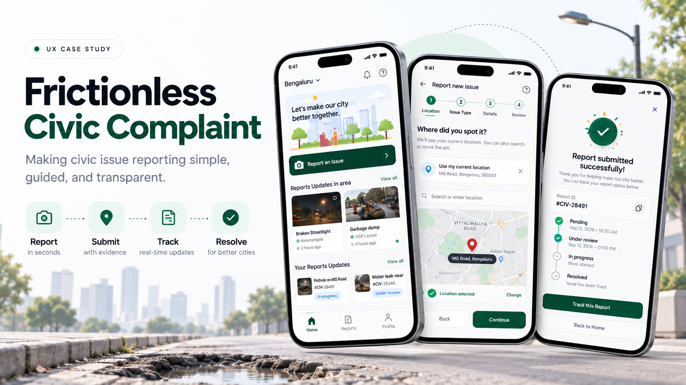
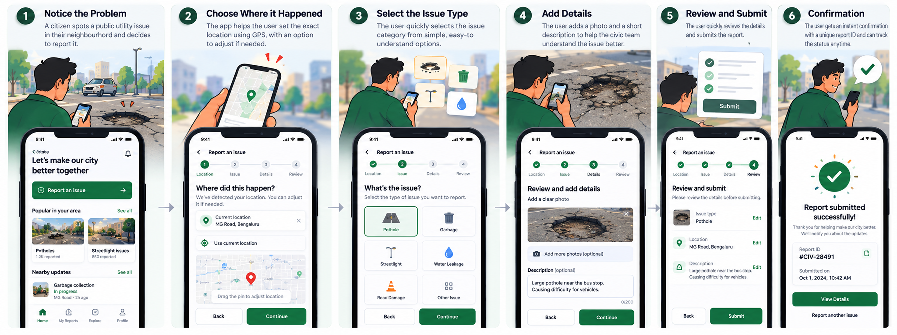
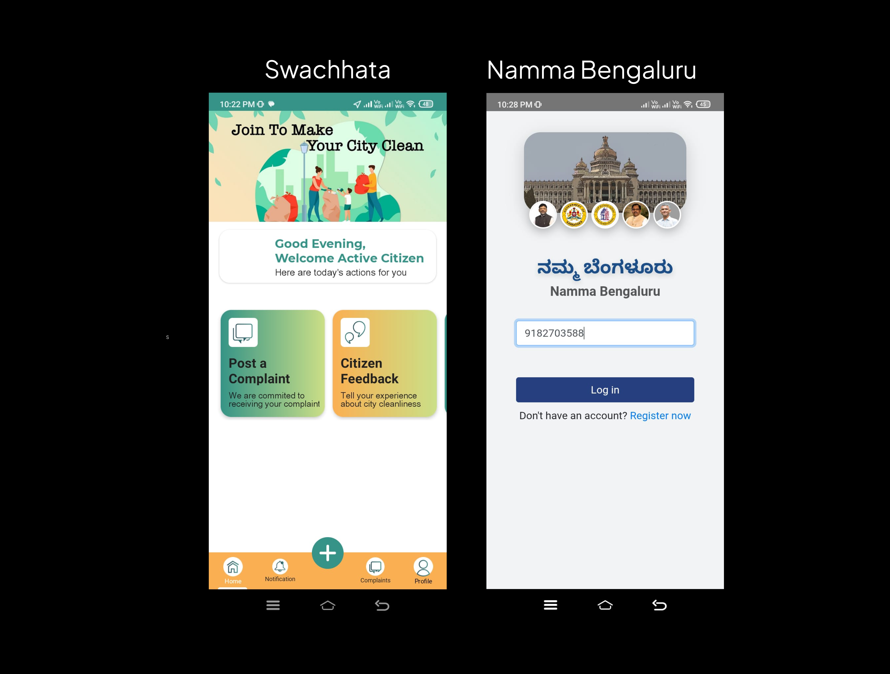
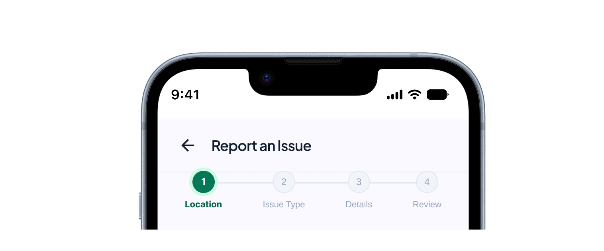
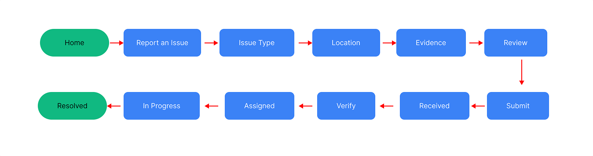

Frictionless Civic Complaint
A simpler, safer and more transparent way to report civic issues — removing administrative complexity from the citizen and moving it into the system.

Overview

Citizens encounter civic issues every day — potholes, garbage dumping, broken streetlights, water leaks and damaged footpaths. Reporting them, however, can feel like completing a government form rather than performing a simple civic action.
This project redesigns the civic reporting experience around a single principle: ask the citizen only what they know, and let the system handle the administrative complexity. The result is a reporting flow that takes seconds, a tracking model that separates submission from verification, and a public layer that shows civic progress without exposing the people who reported it.
The Challenge
Citizens need a simple way to report issues such as potholes, garbage, water leaks, and broken streetlights. My focus was to design a flow where users can:
Report → Submit → Track → Resolve
The problem I focused on: Users should always know where to start, what to do next, and what happens after submitting.
What I Observed
From the existing apps I reviewed, I observed a consistent set of friction points that appear before a citizen ever reaches the actual complaint flow.

| Observation | User problem | Opportunity |
|---|---|---|
| Too many options | “Where do I start?” | Strong primary CTA |
| No progress indicator | “What comes next?” | Stepper |
| Unclear post-submission | “What happens now?” | Tracking |
My takeaway
The problem wasn't only reporting. It was the lack of direction throughout the journey.
Design Direction
Instead of building a long complaint form, I broke the experience into small, understandable steps.

Guide
Make the next action obvious.
Simplify
Ask only for essential information.
Use the system
Use location and visual inputs wherever possible.
Build confidence
Show users what they're submitting.
Keep them informed
Continue the experience after submission.
Core Flow
The full journey — from opening the app to resolution.

Location → What happened → Evidence → Confirmation → Tracking. This keeps the main journey simple while explaining the product thinking. The issue exists at a physical location, so location comes first. Then the citizen describes what happened and provides evidence. Review builds confidence before submission, and tracking continues the experience after.
Key Design Decisions
Expand each decision to understand the reasoning behind the design.
Why? The issue exists at a physical location, so I wanted the system to handle location detection instead of making users manually explain where they are.
Design decision: Current location + change/search location.
Why? I wanted users to know:
- • Where they are
- • What they've completed
- • What's next
Design decision: Location → Issue → Details → Review
Why? Cards make issue types easier to scan, while icons help users recognize them quickly.
Categories:
Why? A photo can communicate the problem clearly, while not every user may be comfortable writing a detailed description.
Design decision: Photo = important · Description = optional
Why? I wanted users to see exactly what they were going to submit and correct anything before sending the report.
Design decision: Issue + Location + Photo + Description + Edit
Why? Some users may hesitate to report an issue if they're concerned about being identified.
Design decision: Provide privacy reassurance at the point where the user is about to submit.
Why? The experience shouldn't end after submission. Users may want to know: Was it verified? Has work started? Is it completed?
Tracking:
Final Screens
High-fidelity UI — the polished experience ready for handoff.
.png)
.png)
.png)
.png)
.png)
.png)
Product Architecture
The product is structured into four core modules.
Reporting Module
- • Location
- • Issue Type
- • Details
- • Review
- • Submit
Tracking Module
- • Report ID
- • Status
- • Timeline
- • Resolution
Community Module
- • Area reports
- • Nearby issues
- • Duplicate awareness
Support Module
- • Help
- • Privacy
- • FAQs
MVP vs Future
A simple two-column comparison of what was built versus what is planned.
MVP
- • Location
- • Issue categories
- • Photo upload
- • Optional description
- • Review
- • Report ID
- • Status tracking
Future
- • AI issue detection
- • AI-generated description
- • Duplicate detection
- • Smart categorization
- • Automatic department routing
- • Predictive resolution updates
- • Advanced notifications
Why no AI in MVP? “I wanted to validate the core reporting experience first instead of adding AI just because it was possible.”
Assumptions & Trade-offs
- • Users allow location access.
- • Photos can provide useful evidence.
- • Reports may require verification.
- • Multiple users may report the same issue.
- Photo vs description → Photo prioritized, writing optional.
- AI vs simplicity → AI moved to future.
- More information vs cognitive load → Only essential information shown during reporting.
Success Metrics
These are proposed success metrics, not measured results.
Completion
- • Report completion rate
- • Drop-off by step
Efficiency
- • Time to submit
- • Bounce-back/error rate
Engagement
- • Report tracking usage
- • Return visits
Product health
- • Duplicate reports
- • Usage by area
Prototype
Reflection
“I'm most proud of the stepper and tracking experience. The stepper helped me think about how to guide users through a task, while tracking pushed me to think beyond submission and consider what happens afterward. This project helped me apply my previous design experience to a more practical, real-world problem.”
Frictionless Civic Complaint
Report simply. Track transparently. Protect citizens.
Report → Verify → Assign → Resolve